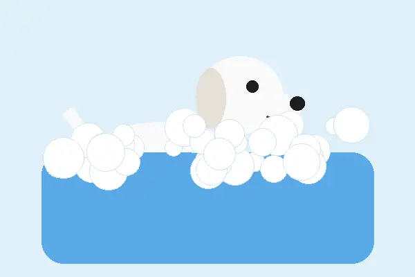
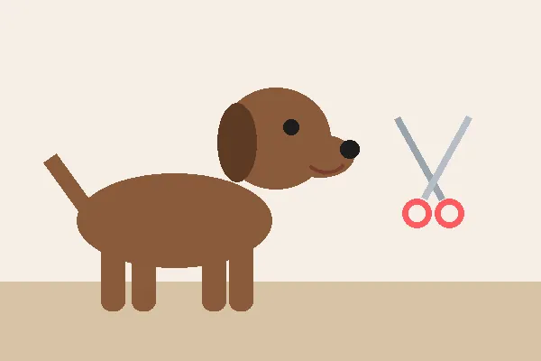
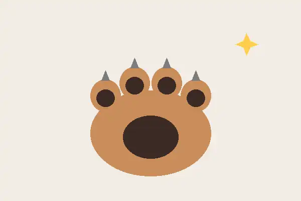

Dog grooming services
Every groom includes a health check of the skin, ears and coat, and a gentle, cage-free experience.
Wash and blow-dry

A warm bath with gentle, Australian-made shampoo, a thorough blow-dry and brush-out, ear clean and a spritz of cologne. Ideal between full grooms.
Full groom and clip

Everything in the wash, plus a breed-style or practical clip, face and paw tidy, and nail trim. Best for curly and long coats like spoodles, cavoodles and shih tzus.
Nail trim

A quick, calm nail trim and file for dogs of any size. No appointment needed on Saturdays.
Puppy intro groom
For puppies under 6 months: a short, gentle first groom to get them used to the bath, dryer and clippers.
See our prices or book a groom.